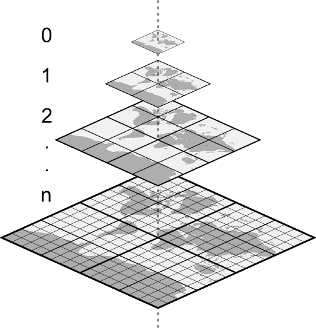
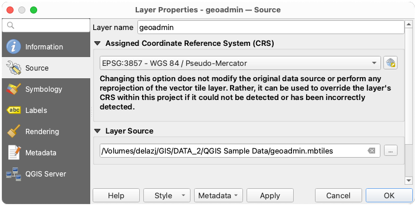
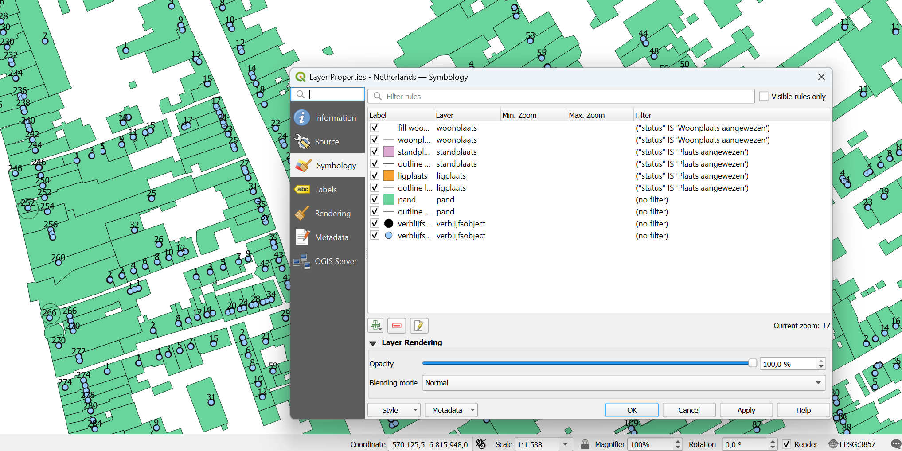
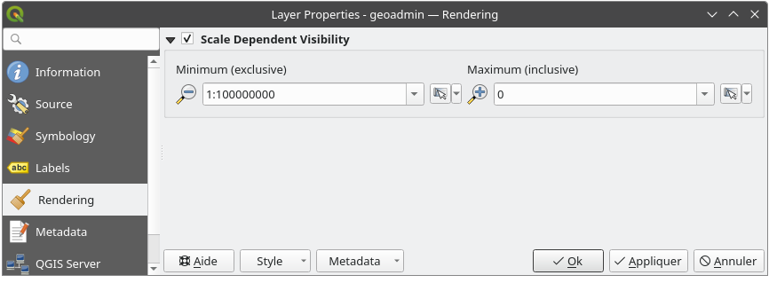

重要
翻訳は あなたが参加できる コミュニティの取り組みです。このページは現在 62.65% 翻訳されています。
15. ベクタタイルの操作
15.1. ベクタタイルとは？
ベクタタイルは地理データのパケットであり、Web上で転送するためにあらかじめ定義されたほぼ正方形の「タイル」にパッケージ化されています。これらは、事前にレンダリングされたラスタ地図タイルとベクタ地図タイルを組み合わせたものです。ベクタタイルサーバは、あらかじめレンダリングされた地図画像の代わりに、各タイルの境界でクリップされたベクタ地図データを返します。クリップされたタイルはベクタタイルサービスのズームレベルを表すもので、ピラミッドアプローチに由来しています。この構造を使用することで、タイル化されていないベクタ地図に較べてデータ転送を削減できます。現在のマップビュー範囲内の、現在のズームレベルのデータのみを転送すれば済むからです。また、タイル化されたラスタ地図との比較では、ベクタデータは通常、レンダリングされたビットマップよりもはるかに小さいため、データ転送も大幅に削減されます。ベクタタイルにはスタイル設定の情報は割り当てられていないため、データを表示するためにはQGISで地図作成スタイルを適用する必要があります。

図 15.1 ズームレベルを持つベクタタイルのピラミッド構造
15.2. サポートする形式
ベクタタイルのサポートは以下のとおりです：
リモートソース（HTTP/S） - XYZテンプレートあり - 例：
type=xyz&url=http://example.com/{z}/{x}/{y}.pbfローカルファイル - XYZテンプレートあり - 例：
type=xyz&url=file:///path/to/tiles/{z}/{x}/{y}.pbfローカルのMBTilesデータベース - 例：
type=mbtiles&url=file:///path/to/file.mbtiles
ベクタタイルデータセットをQGISにロードするには、 データソースマネージャ ダイアログの ベクタタイル タブを使用します。詳細は ベクタタイルサービスを利用する を参照してください。
15.3. ベクタタイルデータセットのプロパティ
The vector tiles Layer Properties dialog provides the following sections:

{kind=link}
{kind=link}
{kind=link}
{kind=link}
{kind=link}
{kind=link}
15.3.1. 情報プロパティ
情報 タブは読み取り専用で、現在のレイヤの要約された情報やメタデータをさっと掴むことができる興味深い場所です。提供される情報には、以下のものがあります：
レイヤのプロバイダからの情報：名前、URI、ソースタイプとパス、ズームレベルの数
custom properties, used to store in the active project additional information about the layer. More properties can be created and managed using PyQGIS, specifically through the setCustomProperty() method.
the Coordinate Reference System: name, units, method, accuracy, reference (i.e., whether it is static or dynamic)
入力されたメタデータ からの情報：アクセス、領域、リンク、連絡先、履歴など
15.3.2. ソースプロパティ
The Source tab displays basic information about the selected vector tile, including:
レイヤパネル で表示される レイヤ名
the Coordinate Reference System: Displays the layer's Coordinate Reference System (CRS). You can change the layer's CRS, by selecting a recently used one in the drop-down list or clicking on the
 Select CRS button (see 座標参照系セレクタ).
Use this process only if the layer CRS is wrong or not specified.
Select CRS button (see 座標参照系セレクタ).
Use this process only if the layer CRS is wrong or not specified.For file based vector tiles (
.vtpkor.mbtiles), a Layer source group indicates the path to the source of the dataset and allows for replacing the loaded layer. Edit the path shown in the text box or press ... Browse to select another file on the disk.

図 15.2 Vector Tiles Properties - Source Dialog
15.3.3. シンボロジーとラベルプロパティ
{kind=link}

図 15.3 ベクタタイルレイヤのシンボロジ
15.3.3.1. 設定ルール
As vector tiles consist of point, line and polygon geometries, the respective symbols are available. To apply a cartographic style (with symbology and/or labels), you can either:
Use a Style URL when creating the Vector Tiles Connection. The symbology will be shown immediately in the
 Symbology tab
after the layer is loaded in QGIS.
Symbology tab
after the layer is loaded in QGIS.Or build your own symbology and labeling in the corresponding tabs of the layer properties. By default, QGIS assigns an identical symbol to the features based on their geometry type.
In both cases, setting a style for a vector tile relies on a set of rules applied to the features, indicating:
a Label, a title for comprehensive identification of the rule
the name of a particular Layer the rule should apply to, if not applied to
(all layers)a Min. Zoom and a Max. Zoom, for the range of display. Symbology and labeling can be dependent on the zoom level.
a Filter, a QGIS expression to identify the features to apply the style to
Each rule is added pressing the  Add rule button
and selecting the type of symbols (Marker, Line, Fill)
corresponding to the features geometry type.
You can as well
Add rule button
and selecting the type of symbols (Marker, Line, Fill)
corresponding to the features geometry type.
You can as well  Remove selected rules or
Remove selected rules or  Edit current rule.
Edit current rule.
At the bottom the Current Zoom is shown.
Check the  Visible rules only option at the top of the dialog
to filter the list of rules to only those that are visible at the current zoom level.
This makes it easier to work with complex vector styling and to locate troublesome rules.
The Filter rules text box also helps you easily find a rule,
by searching the Label, Layer and Filter fields.
Visible rules only option at the top of the dialog
to filter the list of rules to only those that are visible at the current zoom level.
This makes it easier to work with complex vector styling and to locate troublesome rules.
The Filter rules text box also helps you easily find a rule,
by searching the Label, Layer and Filter fields.
{kind=link}
In 図 15.3 we set up style for the OpenStreetMap landuse layer.
For better visibility most of the rules are deselected.
15.3.3.2. レイヤレンダリング
From the Symbology tab, you can also set some options that invariably act on all features of the layer:
不透明度 ：このツールを使用すると、マップキャンバスで背面にあるレイヤを見えるようにできます。スライダーを使用して、レイヤの見え方を必要に応じて変化させてください。スライダーの横にあるメニューで不透明度の割合を正確に定義することもできます。
Blending mode: You can achieve special rendering effects with these tools that you may previously only know from graphics programs. The pixels of your overlaying and underlying layers are mixed through the settings described in 混合モード.
15.3.3.3. スタイル
ほとんどのタブの下部にある メニューは、ベクタータイルに適用するスタイルの保存、読み込み、作成、切り替えのショートカットを提供します。ベクタータイルのスタイルはQGISから QML ファイルとして保存することができ、インポートすることもできます:
QML ファイル（ QML-QGISスタイルファイル形式 ）
MapBox GL JSON スタイル設定ファイル
More details at レイヤのプロパティの保存および共有.
15.3.4. レンダリングプロパティ
:縮尺に応じた表示設定` では、 最大縮尺（含まない） と 最小縮尺（含む） を設定することができ、地物が表示される縮尺の範囲を定義します。それらはこの範囲外で非表示になります。 現在のキャンバススケールを使う ボタンを使用すると、現在のマップキャンバスの縮尺を可視範囲の境界として使用することができます。詳しくは 表示縮尺セレクタ を参照してください。
{kind=link}

図 15.4 Vector Tiles Properties - Rendering Dialog
15.3.5. メタデータプロパティ
メタデータ タブには、レイヤに関するメタデータレポートの作成・編集オプションがあります。詳細は メタデータ を参照してください。
15.4. QGISサーバープロパティ
QGISサーバー タブでは、 QGISサーバー で公開されるデータの設定を行うことができます。設定内容は以下の通りです：
Description: provides information to describe the data, such as Short name, Title, Abstract, a Keyword list, and a Data URL whose Format can be in
text/html,text/plainorapplication/pdf.帰属: データの提供者を特定するための タイトル と URL
メタデータURL:
FGDCまたはTC211データ型 で、text/plainまたはtext/xml形式 であるメタデータの URL 一覧凡例URL: 凡例の URL で、
image/pngまたはimage/jpeg形式 のいずれか